Request: A 10-second widescreen (16:9) silent clip of this car (attached) driving across this bridge (attached), seen from the roadside, morning light. Two pictures attached:
image-to-video on ltx-2.5 · 240 cr · the car photo was the start frame, the bridge was words
mechanism: start frame = the car photo; whatever is in the frame persists, so the show stand stays and the bridge never arrives
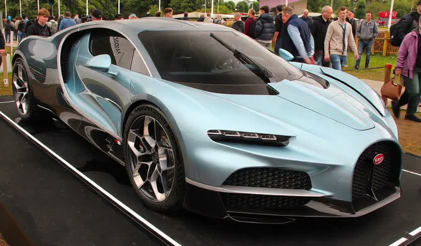
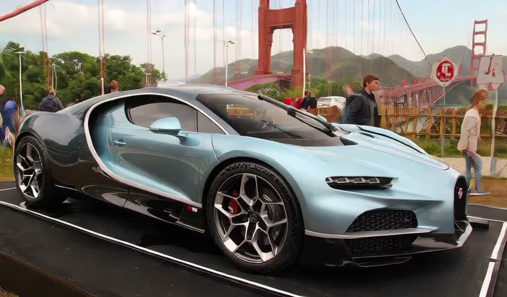
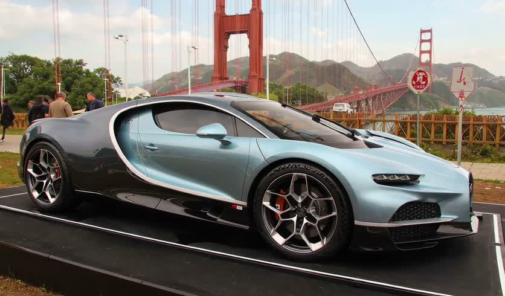
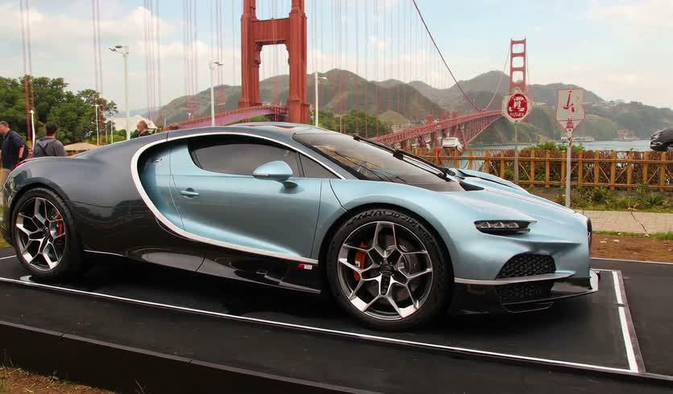
Use the supplied image as the starting frame and strict visual reference. Create one continuous 10-second, 16:9 silent shot from a stationary roadside camera in natural morning light. PRESERVE Bugatti: its exact recognizable body design and proportions, its light blue and black color placement, and its visible wheels, grille and trim. PRESERVE Golden Gate Bridge: red-orange towers and suspension cables, roadway geometry and pedestrian walkway. Preserve the reference’s visual style and vehicle identity throughout. Establish the bridge setting with blue water and green hills visible beyond the roadside barrier beneath a clear blue sky; do not redesign the car to fit the setting. The Bugatti drives forward along its lane across the bridge at a steady, believable speed, following its initial orientation, with wheels rotating consistently with its travel, tires firmly contacting the road and morning reflections moving naturally across the bodywork. Keep the camera locked off: no pan, tilt, zoom, dolly or cuts. Frame the road so the car remains visible throughout, and hold this unchanged composition on the moving Bugatti for the final two seconds. Maintain coherent vehicle anatomy, perspective, shadows and bridge geometry from first frame to last. Audio off. Negatives: no vehicle morphing, color shifts, warped wheels, sliding tires, floating, sudden acceleration, lane changes, added logos or text, camera shake, transitions or freeze-frame ending.
text-to-video on minimax-h3 · 240 cr · @product + @environment
mechanism: the clip is built from scratch around the two likenesses; the prompt says what to keep from each photo and what to drop (stand, crowd)
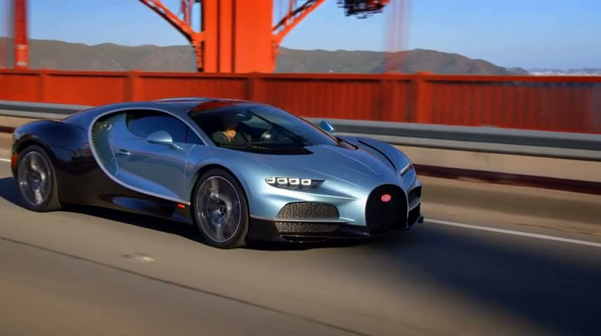
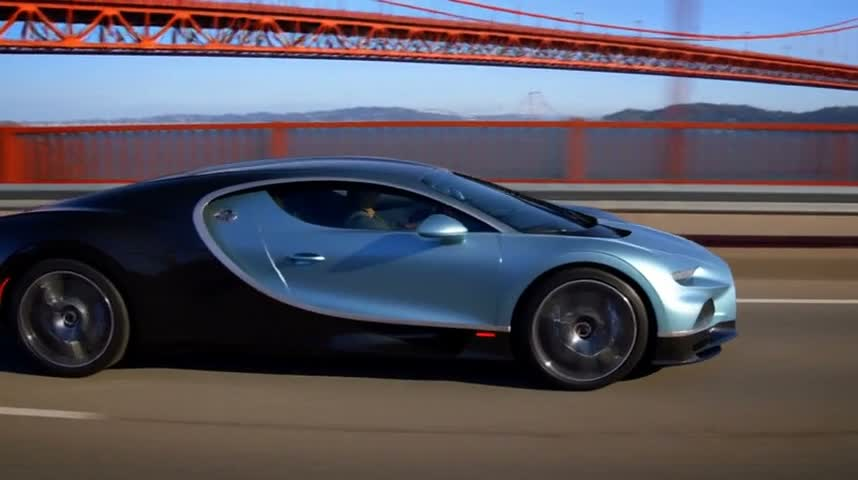
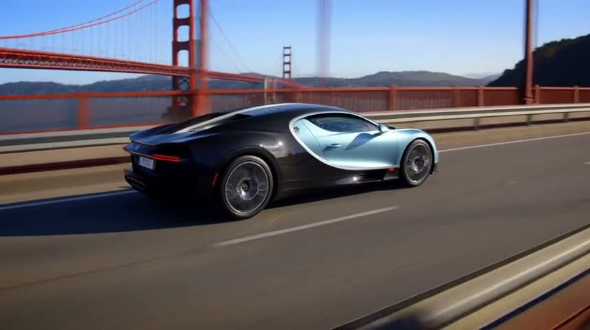
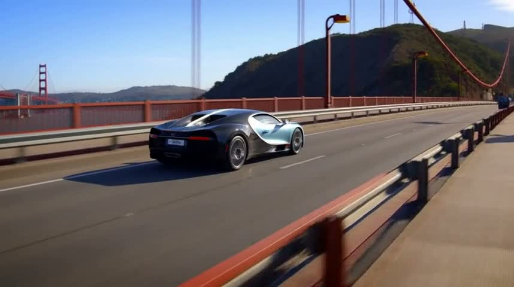
10-second silent photorealistic image-to-video automotive piece: light blue and black Bugatti from @product driving across the Golden Gate Bridge from @environment, 16:9. Live-action realism, early-morning side light, calm aspirational mood, crisp paint reflections, believable asphalt, smooth unhurried driving. Use references as likeness guides, not pasted photos. Preserve @product’s exact body shape, blue-and-black paint layout, grille and wheels; discard display platform, crowd and original setting. Preserve @environment’s red-orange architecture, suspension cables, blue bay and green hills; replace midday light with morning light; omit photographed traffic and pedestrians. One continuous roadside shot; consistent car, bridge geometry, travel direction and morning light. 0–5 s: medium-wide front three-quarter view from a safe roadside position at car-window height. Bugatti, anchored by its light-blue nose and black accents, drives steadily left to right in the nearest lane. Red-orange railing borders the road; bridge towers rise in the upper background. Camera pans smoothly right, keeping the entire car visible. 5–10 s: medium-wide side-to-rear three-quarter view. Bugatti, anchored by its blue-and-black paint, continues rightward. Blue water shows through the railing below; green hills appear small on the far horizon. Roadside camera gently eases its rightward pan to a composed view. At 8 s, freeze the frame for the final two seconds, keeping the complete car and recognizable bridge readable, without another shot. Audio off. Restrained natural grade, warm highlights, clean blue shadows, measured pacing. Negatives: no captions, added lettering, spectators, display stand, studio setting, interior views, aerial views, racing, skid marks, distorted wheels, altered car identity or warped bridge cables.
text-to-video on minimax-h3 · 240 cr · @car + @bridge
mechanism: the same mechanism, chosen by the chat model on its own
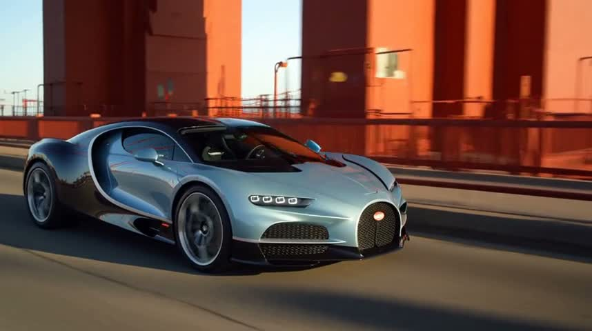
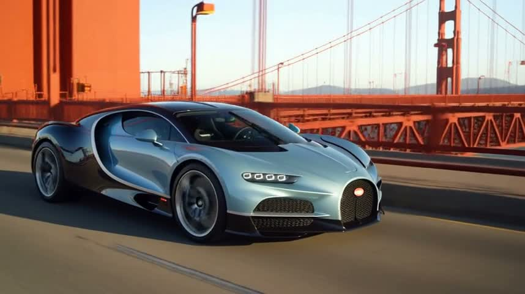
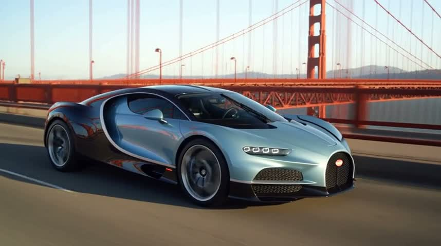
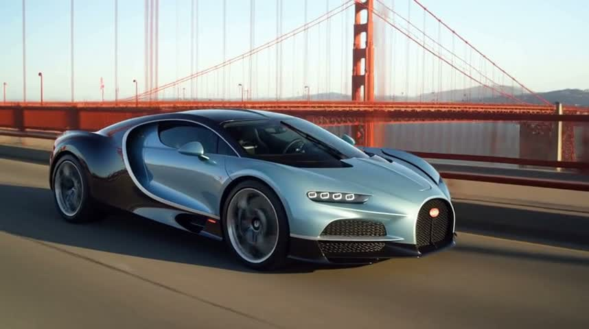
A photorealistic 10-second cinematic shot of the exact pale ice-blue and black Bugatti sports car in @car driving smoothly from left to right across the Golden Gate Bridge shown in @bridge. Preserve the car's distinctive body shape, pale blue paint, black detailing, wheels and horseshoe grille. Use @bridge as the location reference, preserving its recognizable International Orange suspension towers and cables, but change viewpoint to a safe roadside position at road-deck height. Widescreen composition, roadside three-quarter side view, full car clearly visible as it passes, bridge tower and suspension cables visible in background. Warm early morning sunlight, gentle atmospheric haze over San Francisco Bay, realistic reflections and shadows. One continuous steady roadside shot with a subtle pan following the moving car, natural rotating wheels and physically believable forward travel. No crowds or exhibition platform from the car reference. No cuts, no text, no music, no sound; silent video.